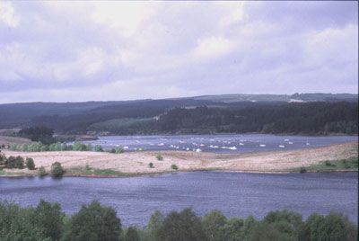

Kielder Reservoir and Kielder Observatory
Home to northern Europe’s largest man-made lake and England's largest forest, Kielder Water & Forest Park is one of Northumberland's best attractions.
It is perfect for individuals or families that love nature, water sports, exploring, walking, cycling and much more.
Kielder Water & Forest Park features mile upon mile of purpose-built trails including forest walks for all the family and dedicated mountain bike tracks. The Lakeside Way is a 26 mile multi-user trail, suitable for walkers, cyclists, horse riders and wheelchair users, that encircles the shoreline of Kielder Water.
A haven for wildlife, Kielder Water & Forest Park is also home to around 50% of England’s native red squirrel population. In 2009 three chicks were born to a record breaking osprey couple - the first birds for at least 200 years to successfully raise chicks in Northumberland. So far they have returned to breed every year since. You can also spot otters, roe deer badgers and bats.
Waterskiing and sailing enthusiasts take to the water all year round and the lake offers a huge challenge to keen trout anglers between March and October.
http://www.visitkielder.com/
Kielder Observatory
A star gazers' heaven! The Park is lucky enough to have the darkest night skies in England, thanks to minimal light pollution. Spectacular views from the observatory are best in summer while winter nights are darker and better for star gazing.
http://www.kielderobservatory.org/
|